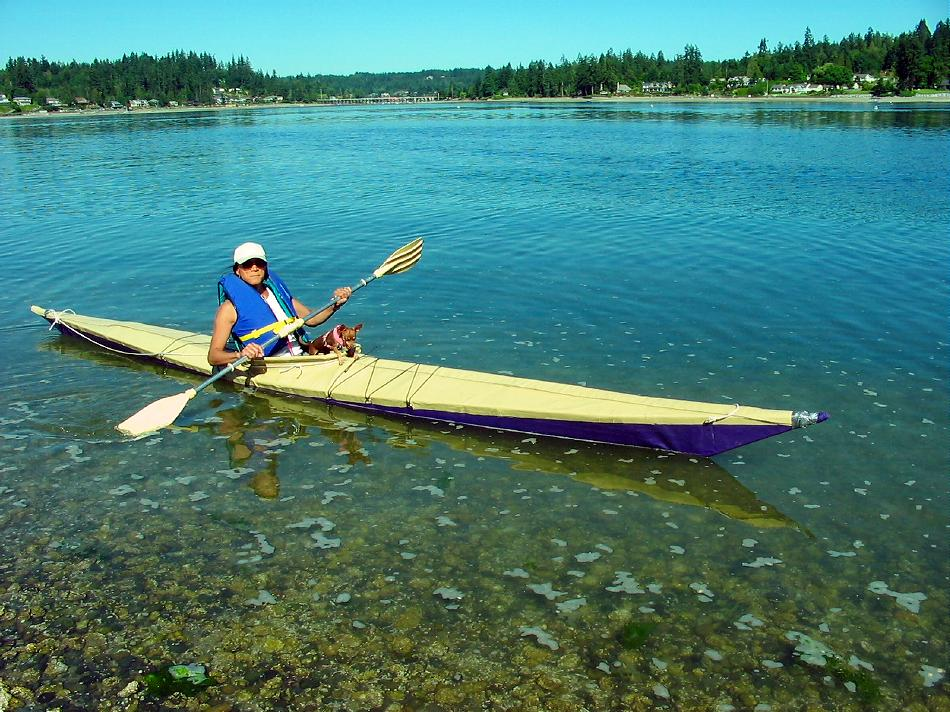

Sea Ranger by Joan Roco (US)
Menu
Previous Page
Next Page

Joan , from Tucson, Arizona paddles her Sea Ranger folder. She constructed the stringers from old aluminum crutches, and made inserts from aluminum ski poles.